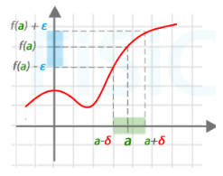
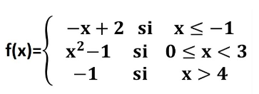

Desarrollo
3.1 Teoria de la computabilidad
Es un campo de la informática y las matemáticas que se centra en entender qué problemas pueden ser resueltos por computadoras y cómo pueden ser resueltos.
Explora conceptos como máquinas abstractas, algoritmos y la noción de computabilidad para determinar los límites y posibilidades de lo que puede
ser calculado. La cual resuelve las siguientes preguntas:
-¿Qué problemas pueden ser resueltos por una computadora?
-¿Cuales no pueden ser resueltos?
-¿Cuales no pueden ser resueltos?
-El límite entre estas dos preguntas
3.1.1 ¿Qué es computable?
Algo es considerado computable si existe un procedimiento o algoritmo que pueda calcularlo de manera precisa y efectiva. Un problema o función es computable
si se puede resolver utilizando un algoritmo, es decir, si existe un método sistemático que puede producir la respuesta correcta para cualquier entrada válida
en un tiempo finito.
La noción de computabilidad está relacionada con la capacidad de resolver problemas utilizando un modelo de computación dado, como la máquina de Turing o el
modelo lambda, y determina qué problemas pueden ser resueltos por estos modelos mediante algoritmos efectivos. Algunos problemas son computables, lo que
significa que existe un algoritmo que puede resolverlos, mientras que otros son no computables, lo que implica que no hay un algoritmo que pueda resolverlos
en todos los casos.
3.1.2 ¿Qué es la teoría de la computabilidad?
Rama en la ciencia de la computación que se enfoca en entender los límites y posibilidades de la computación. Ll cual responde a las siguientes preguntas:
- ¿Qué problemas pueden ser resueltos por una computadora?
- ¿Cuáles no pueden ser resueltos?
- El límite entre estas dos preguntas
3.1.3 Historia y Maquina de Turing
Los ordenadores son capaces de hacer cosas increíbles desde simular sistemas cuánticos hasta reproducir películas en Netflix y es que la informática tiene una
historia larga desde las máquinas de calcular de pascal o leibniz pasando por el analytical engine de babbage, hasta los más modernos y caros smartphones.
Primero hubo artefactos que mecanizan el cálculo y ahí se pasó a máquinas programables y de ahí al concepto que revolucionó la historia el computador de programa
almacenado es decir que en la memoria no sólo se guardan datos sino los propios programas que ejecutan el caso es que en aquel momento hubo 2 nombres que merecen
seguramente pasará a la historia como los padres de la informática tal y como la conocemos hoy en día uno es John Von Newmann creador junto con Eckert y Mauchly de la
hoy conocida como arquitectura de von neumann que es la que tienen los ordenadores actuales vamos una cpu una memoria central y unos dispositivos de entrada
salida esa arquitectura en los años 40 del siglo 20 implementaba la idea que revolucionó el mundo.
Arquitectura de Vonn Newmann

La maquina de Turing es una banda lo suficientemente grande donde va a tener simbolos de el alfabeto deseado y un cabezal que va a escribir y leer esta banda
La maquina de Turing tiene 5 principales instrucciones las cuales son:
q0: Estado inicial o de aceptacion
7 : si se encunetra un signo del alfabeto
7 : Escribe un signo del alfabeto
RxL: Transicion izquierda o derecha
qn: Transiciona a el estado deseado
Ejemplo de codigo o programa:
3.2 Lenguajes
3.2.1 Modelo computacional (teóricos).
Es un objeto matemático, que nos permite analizar las capacidades, propiedades y límites de la computabilidad
Existen diferentes modelos.
Cada uno de ellos permite resolver diferentes problemas. Se pueden comparar entre ellos para determinar su poder computacional
Ejemplos:
Autómatas, finitos, de pila , de dos pilas, celulares
Máquina de Turing
Oráculo
3.2.2 Alfabeto y cadenas.
Alfabeto:
Es un conjunto finito y no vacío de símbolos
Ejemplos:{0,1} == Binario
{a,b,c,d,e,...,z} == Abecedario{0,1,°,+,4} == Inventado
Impacto: Lenguaje con el que nos comunicamos con el intérprete.
Cadena de un alfabeto:
100101 es una cadena del alfabeto {0,1} de longitud 6
Cadena vacía o empty string
3.2.3 Lenguajes Regulares.
Un lenguaje es regular, si hay algún autómata finito que lo reconozca.
Operadores regulares (resulta en otro lenguaje regular)
Sean A,B dos lenguajes regulares.
A={auto,avión} ; B={rojo,verde,azul}
Unión AuB
AuB={auto,avión,rojo,verde,azul}
Concatenación AoB
AoB={autorojo,avionverde,...,avionazul}
Estrella (star) A*
A*= { Ø, autoauto,avionauto,avionavionavion…}
3.3 Automata finito
Las Máquinas de estado finito o comúnmente se les llama Autómata Finitos,es una abstracción computacional que describe el comportamiento de un sistema reactivo utilizando un número
determinado de Estados y transiciones entre ellos, que contiene los siguientes componentes: No terminales, Terminales, Símbolo inicial, conjunto de estados, transiciones, conjunto
de estados de aceptación y se representa con siguiente estructura:
3.3.1 Automatas determinista y no determinista.
Los Autómatas Finitos se clasifican de la siguiente manera:
Determinista:
Para cada combinación de estado y símbolo de entrada, hay una única transición posible.
No Determinista:
Para una combinación de estado y símbolo de entrada, puede haber múltiples transiciones posibles.
Aplicaciones:
Diseño de Circuitos Digitales.
Compiladores y Analizadores Léxicos.
Protocolos de Comunicación.
Diseño de Interfaces de Usuario.
Modelado de Sistemas de Control.
Juegos y Simulaciones.
Sistemas Embebidos.
Procesamiento de Señales.
Ejemplo 1:
En este ejemplo tenemos un autómata Finito No determinista y lo vamos a limpiar para tener su Autómata Finito Determinista, en dónde observamos la disyunción desde una Expresión
Regular dada, observamos de igual forma la concatenación, la cerradura positiva y la cerradura estrella.
Ejemplo 2:
Ejemplo 2: Una vez obtenido las transiciones válidas, observamos que llegamos al estado 4 y 8 con a y b desde los estados 0, 3, 7, también observamos que el estado inicial es también final, por lo que
el estado marcado como final es un estado inaccesible ya que no se puede llegar a él con ningún símbolo válido. En este paso se eliminan las lambdas y solo quedan los símbolos válidos.
Ejemplo 3:
Observamos que algunos estados se comportan de manera identica, por lo que al nombrarlos los podemos tratar como el mismo, esto con la intención de eliminar estados vacíos. El 1 se asigna cuando alguno
de los estados del renglón son terminales. Una vez nombrando y simplificando los estados obtenemos un Autómata Finito Determinista.
Ejemplo 4:
Este es el esquema final de nuestro AFD, dónde existe recursividad al mismo estado con dos símbolos válidos.
3.4 Funciones parciales
Una función parcial se refiere a una función matemática que no está definida para todos los valores del dominio. Es decir, que solo está definida para un subconjunto específico de valores del dominio.
Su contraste, es una función total, que está definida para todos los valores de su dominio
3.4.1 En la informatica.
Las funciones parciales en la informática hacen referencia a una función que no tiene un resultado definido con los valores de entrada.
De esta manera solo puede devolver un resultado en ciertos casos, y no estar definido para otros; por lo que se pueden generar errores durante la compilación de los códigos teniendo como consecuencia
el fallo del sistema; por lo cual se tiene que tener en consideración posibles errores y su correcto manejo
3.4.2 Dominio restringido.
Las operaciones parciales operan en un conjunto específico del dominio.
Hay que considerar que el dominio no abarca todos los valores posibles, sino sólo los establecidos para dicha función
3.4.3 Puntos de Exclusión.
Puede haber puntos en el dominio donde la función no esté definida debido a restricciones matemáticas o lógicas, estas pueden ser resultados fuera del campo de los números reales, no exista validación
lógica para ciertas operaciones, entre otros.
3.4.4 Reglas condicionales.
Una función parcial, normalmente está expresada bajo una regla específica, la cual dicta bajo qué consideraciones se definirá y cómo se comportará bajo ellas
3.4.5 Representación gráfica.
Se usa para mostrar los puntos discontinuos en una función. Esto vuelve visibles las restricciones del dominio en ciertas funciones
3.4.6 Manejo de excepciones.
Se abordan situaciones donde la función no está definida y proporciona una respuesta adecuada para manejar errores de manera controlada
3.4.7 Continuidad y discontinuidad.
Una función se considera continua en un punto si cumple con 3 condiciones:
El valor en el punto existe
El límite cuando se acerca por la izquierda existe
El límite cuando se acerca por la derecha existe
Además, los límites laterales y el valor en el punto son iguales.
Cuando una función es continua para todos los puntos de su dominio, se dice que es continua en todo su dominio

La discontinuidad ocurre cuando una función no es continua en algún punto de su dominio, pero existen varios tipos de discontinuidad, tales como:
Discontinuidad removible: Ocurre cuando hay un vacío en la gráfica, pero este puede ser cubierto asignando un valor específico a la función en ese punto
Discontinuidad de salto:Ocurre cuando la función tiene límites laterales en un punto, pero estos no son iguales entre sí
Discontinuidad infinita: Ocurre cuando el límite de la función en un punto es infinito
Discontinuidad de asíntota vertical: Ocurre cuando la función tiene una asíntota vertical en algún punto
Discontinuidad de asíntota oblicua: Ocurre cuando la función tiene una asíntota horizontal en algún punto
3.4.8 Ecuaciones y desigualdades.
Definición por partes:
Se puede definir una función por partes, especificando diferentes expresiones para diferentes intervalos de su dominio

Notación de función escalonada
La notación escalonada utiliza la función escalón unitario para especificar en que intervalo o conjunto la función toma un valor particular.
Desigualdades con funciones partidas
Expresa desigualdades en las cuales la función que se está considerando cambiar su comportamiento en distintos intervalos del dominio, lo que implica definir
diferentes expresiones para la función en diferentes subconjuntos del dominio
Utilización de funciones por tramos para representar regiones específicas
Implica definir una función diferente de diferentes segmentos específicos de su dominio. Al representar regiones específicas con funciones con tramos se logra
una descripción más detallada y precisa de la función en su conjunto
3.4.9 Aplicaciones practicas.
Las funciones parciales se utilizan en varios campos de las matemáticas y la ingeniería para abordar problemas complejos descomponiendolos en partes más manejables.
Algunas aplicaciones en diversos campos son:
Cálculo diferencial e integral
- Descomposición de funciones complejas
- Regla de la cadena
Algebra lineal
- Descomposición de matrices
Ecuaciones diferenciales parciales
- Metodo de separacion variable
Teoría de la probabilidad
- Función de densidad conjunta
Programación funcional
- Descomposición de funciones en componentes pequeños
Control de sistemas dinámicos
- Descomposición de sistemas complejos
Física teórica
- Expansión en funciones propias
3.4.10 Operaciones con funciones parciales.
1. Identificar las funciones parciales
- Cada función parcial está definida para ciertos valores de su dominio
2. Determinar el dominio de la función resultante
- Identificar el dominio en que la función resulta estar definida. Asegurando que los valores de entrada cumplan con las restricción es parciales originales
3. Realizar la operación matemática
- Dependiendo de la operación que se deba realizar, aplicar la operación a la función parcial correspondiente. Asegurando que estas operaciones están definidas en el dominio que se ha identificado
4. Simplificar de ser posible
- De ser posible, cancelar términos comunes o factorizar los necesarios
5. Verificar el dominio de la función resultante
- Revisar que la función resultante está definida en el dominio que se identificó inicialmente, tener en cuenta las restricciones
Ejemplo:
Notación y terminología
Una función parcial se denomina comúnmente como
Casos especiales
Discontinuidad
Las funciones pueden presentar discontinuidad en los puntos donde están definidas y en los puntos límites del dominio donde la función no está definida
Funciones definidas por partes
Algunas funciones se definen usando utilizando diferentes expresiones en diferentes intervalos
Asíntotas
La ducciones pueden tener asíntotas en su dominio, estas son líneas que se acercan a medida que la variable de la función se acerca a ciertos valores, pueden ser horizontales o verticales
Saltos finitos
Algunas funciones pueden tener saltos finitos en lugar de discontinuidades, estos son puntos donde la función experimenta un cambio finito en su valor
Funciones de valor absoluto
En la función asigna a cada número real su valor distancia respecto a cero en la recta numérica
Funciones periódicas
Algunas funciones se repiten en intervalos regulares
Funciones no acotadas
Las fusiones no tienen un límite superior o inferior en ciertos intervalos
Puntos singulares
Es un punto donde la función no es diferenciable
Funciones multivalorados
Son aquellas que se le asigna más de un valor al mismo elemento del dominio